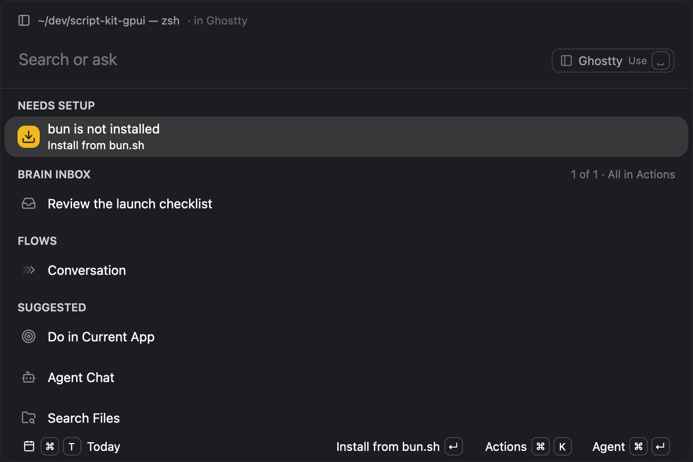

Script Kit · main menu
A quieter top, one step at a time
Each option builds on the one before it. All four use the same rows, keys, and behavior, so switching keeps whatever you typed. That way, you’re comparing only how the top of the window explains itself.
Option
Jump to
Input text
How well you know the keys
Appearance
Try it
- Type remind me to call mom tomorrow at 5pm, then press ↵. The line reports what ran, and ⌘Z takes it back.
- With nothing typed, press Space to act on the window behind Script Kit, or ↑ to act on the last run. Esc lets go.
- Type empty trash and press ↵. It waits eight seconds and pauses while you type. ⌘Z on an empty input stops it.
- In options C and D, hold ⌘ to see every key where it works. Use a key three times and its words go; after eight uses, its keycap goes too.
Browsers keep some shortcuts for themselves. If ⌘1 switches tabs, click the row instead. Single-click selects a row; double-click or ↵ runs it.
What the app draws now
